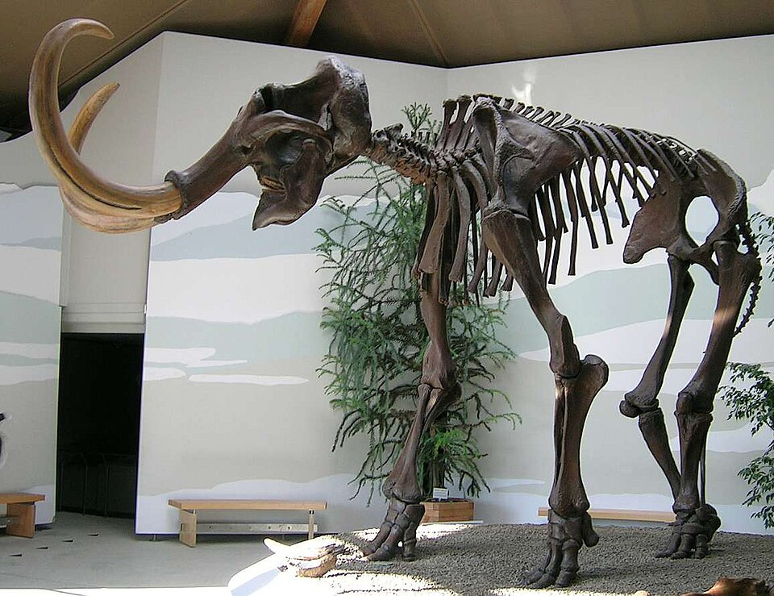
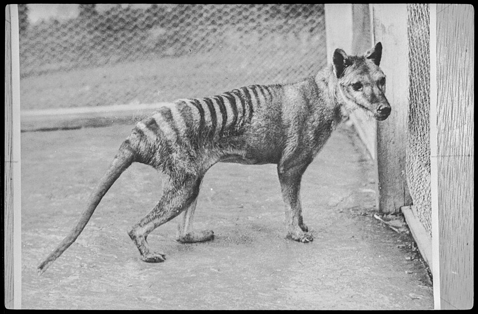
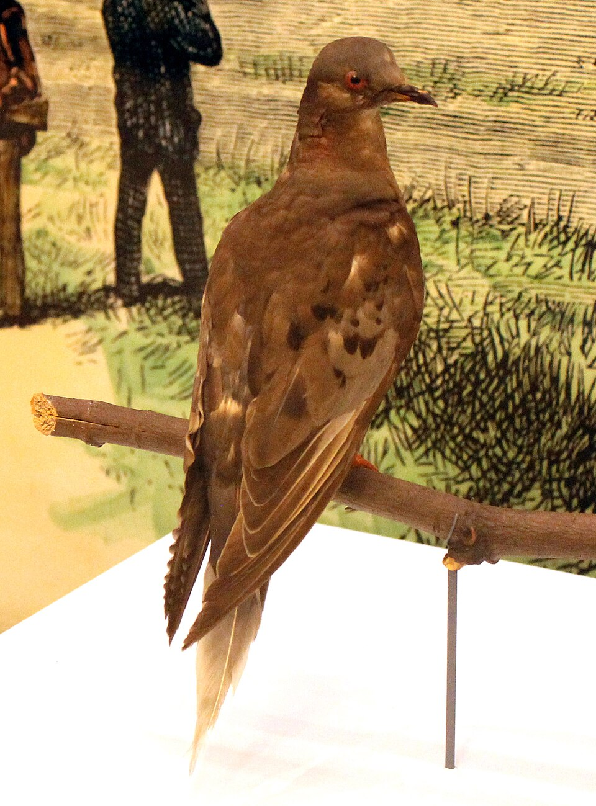

Biodesign Challenge 2026 · Extinction Archive · Umwelt Archive
滅絕檔案：失落物種的人工智慧紀念館
Extinction Archive: AI Memorial for Lost Species
當一個物種已經離開世界，展覽還能留下什麼？本計畫以可互動的地球為入口，把公開檔案、分布線索、滅絕原因與倫理議題放在同一張地圖上，引導觀眾從「知道它已不在」走向「理解它如何離去」。
When a species is already gone, what can an exhibition still offer? This project uses an interactive globe as a public entry, placing open archives, distributional evidence, causes of extinction, and ethical questions on one map—moving visitors from knowing it is absent to understanding how it disappeared.
團隊成員
郭曉悅（GUO XIAO YUE），MC569254：體驗與敘事、倫理、檔案策展。
劉家群（LIU JIA QUN），MC569293：技術、WebXR、生成環境與認識論介面。
指導教師：Atticus SIMS
澳門大學
Team members
GUO XIAO YUE (MC569254) — experience & narrative, ethics, dossier curation.
LIU JIA QUN (MC569293) — technology, WebXR, generative environments, epistemic UI.
Mentor · Atticus SIMS
Macau University
《滅絕檔案》不是要「復活過去」，也不把滅絕做成奇觀。它是一座面向公眾的數位紀念館：透過地球光點、物種檔案與可核對來源，重新看見那些因獵捕、貿易、棲地改變、入侵物種、污染或誤捕等因素，被推向終點的生命。敘事把每一次離開從一句結論，拉回到它曾生活在何處、留下了哪些記錄、又如何被推向終點。
Extinction Archive is not about “resurrecting the past,” nor does it turn extinction into spectacle. It is a public digital memorial: through a globe of light points, species dossiers, and checkable sources, it brings into view lives pushed toward disappearance by hunting, trade, habitat change, invasive species, pollution, or by-catch. Each story returns from a headline to a place—where it lived, what was recorded, and how the end was reached.
54：現行 Web 地球儀可點選物種檔案（animal-*-manifest.json）。
51：研究匯入表 data/extinction_archive/animals_full.csv 目前之分類元筆數（隨匯入合併而變）。
87：PROJECT_PLAN.md 所規劃「高優先整合名單」之目標筆數（策展／感官敘事層級，與 54、51 不同層）。
三組數字代表不同資料層，專案版本更新時可能微調；若評審追問，請以倉庫內實際檔案筆數為準。
54 — selectable species dossiers wired into the web globe (animal-*-manifest.json).
51 — taxa rows currently in the research import data/extinction_archive/animals_full.csv (changes with merges).
87 — target size for a planned high-priority unified list in PROJECT_PLAN.md (curation layer; not the same as 54/51).
These are different layers; use the on-disk row counts as ground truth for reviewers.
選種不以獵奇為目標，而以代表性與可核對的證據鏈為原則。名單在地理上盡量涵蓋陸域、島嶼與近岸，在成因上讓不同滅絕機制同時可見。少數重點敘事線用來說清楚時間尺度、檔案倫理與聲景缺席；其餘光點作為廣譜樣本，共同說明：終點往往來自多重壓力的長期疊加，而非單一原因。
Species are not selected for curiosity, but for representativeness and a verifiable chain of evidence. The list spans landmasses, islands, and nearshore regions, and surfaces multiple drivers of loss. A few “flagship threads” make time, archival ethics, and absent soundscapes legible; the remaining points are broader samples, together showing that end points often follow long-term, compounding pressures—not a single cause.



其餘光點不是陪襯，而是廣譜樣本：它們共同說明滅絕往往來自多重壓力的長期疊加。
The remaining points are not decoration—they are broader samples, together showing that extinction is often a long, layered process.
進入地球 — 先感受世界尺度，再靠近單一物種。
Enter the globe — read the world first, then approach one species.
點選光點 — 每個座標連結一份檔案：地區、年代、滅絕原因與證據來源。
Select a point — each location opens a dossier: region, era, cause, and cited sources.
理解離去 — 圖像、聲音、路徑與問題並置，呈現「如何消失」，而不只給結論。
Understand the leaving — image, sound, paths, and questions show how disappearance unfolds, not only that it did.
留下反思 — 思考責任、資料不確定性與未來的生態選擇。
Leave a reflection — responsibility, uncertainty, and future ecological choice.
光點不是裝飾，而是通向證據與記憶的入口。
Points of light are not decoration—they are entries into evidence and memory.
Design Ideas
視覺上以深色地球、低飽和自然色與檔案紙色為主，降低科技炫耀的語氣。資訊層級從「世界」到「個體」，讓人先感受失去的尺度，再進入可核對的細節。
A dark globe, low-saturation natural tones, and archive paper hues avoid tech triumphalism. The hierarchy moves from the world to the individual: scale of loss first, checkable detail second.
人工智慧在此不是造物主，也不取代證據；它更像謹慎的編目員：整理材料、連結圖像與聲音、提示不同來源之間的關係。所有生成內容都應標明來源、保留不確定性，並避免把想像誤述為事實。
AI is neither creator nor substitute for evidence. It acts as a careful cataloger—organizing materials, connecting image and sound, and surfacing relationships between sources. Generated outputs must name sources, preserve uncertainty, and never present imagination as fact.
紅色名錄、館藏編號、舊文獻、分布紀錄、開放檔案。
Red Lists, accession numbers, older literature, distributional records, open archives.
地球光點、物種卡片、時間與原因標籤、重點案例。
Globe points, species cards, time and cause tags, focal cases.
來源、責任、不確定性、殖民語境與詮釋權。
Sources, responsibility, uncertainty, colonial context, rights of interpretation.
Ethics & Limits
失落物種不應被當作技術表演的素材。涉及殖民歷史、原住民知識、標本採集與「去滅絕」討論時，敘述需要說明誰在記錄、誰被影響、誰有權參與詮釋。紀念不是占有，而是讓責任與證據同時被看見。
Lost species must not be reduced to a tech spectacle. When colonial history, Indigenous knowledge, specimen collection, and de-extinction enter the frame, the narrative should state who records, who is affected, and who may interpret. Memorial practice is not possession—it is making responsibility and evidence visible together.
為失落物種，保留一種被理解的方式。
For lost species, a way of being understood.